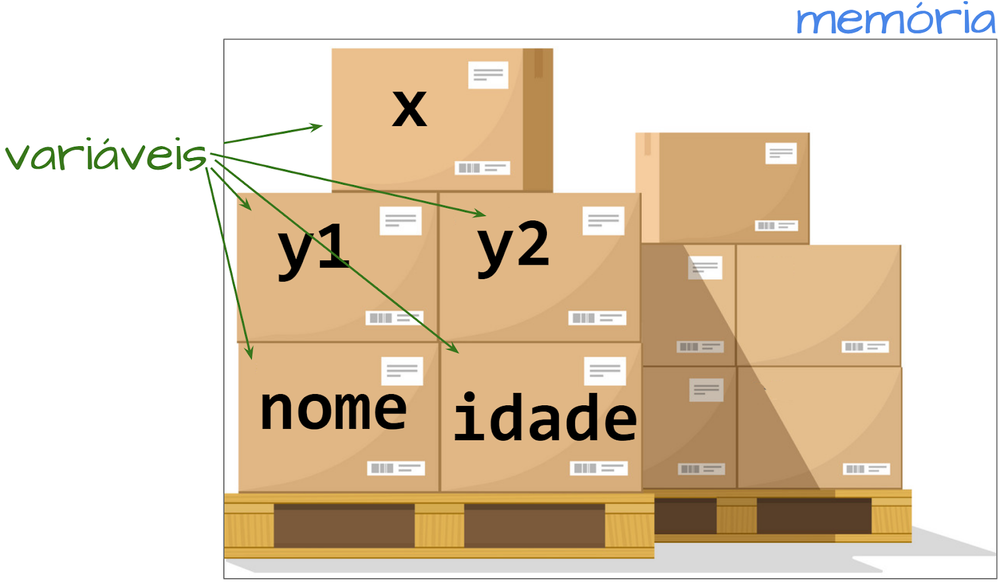

Material de apoio para a disciplina Linguagem de Programação da UACSA/UFRPE - 2020.1
Produzido pelo prof. João Pimentel
Eu já expliquei que gosto de pensar em variáveis como caixinhas, né? Quando eu escrevo
x = 'Ana'
estou mandando o computador guardar a string 'Ana' na caixinha chamada x. Se depois eu faço
print('oi,', x)
o computador vai olhar a caixinha do x, ver que a string 'Ana' está guardada lá, e mostrar a mensagem "oi, Ana" na tela.
O sistema operacional separa pedaços da memória para cada programa utilizar. A gente pode pensar na memória do nosso programa como sendo um grande depósito, onde cabem várias caixinhas (variáveis).
Vamos lá! Sempre que eu escrevo algo assim:
variavel = "bla bla bla bla"isso é uma atribuição. O computador pega o que estiver à direita do sinal de igual, calcula o resultado, e guarda o resultado na variável, que deve estar do lado esquerdo do sinal de igual. Por isso que
x = 2 + 2funciona, enquanto
2 + 2 = xnão funciona.
Em Python, comandos como
x = 99 + 1
Dê uma olhadinha nesse código:
x = 2
x = 5
print(x)
se a gente pensar como na matemática, dá tilt! Como é que pode, x ser 2 e, ao mesmo tempo, ser 5??!?
Sorte a nossa que aqui não é matemática, é programação! O que acontece? Acompanha a explicação... (eita, rimou!)
x = 2
x = 5
print(x)
Primeiro o computador guarda o número 2 na variável x. Em seguida, o computador guarda o número 5 na variável x. E o que acontece com o 2 que estava lá? Morreu. Já era! A partir de agora, o que está guardado na caixinha do x é só o número 5.
Daí que quando o computador chegar na terceira linha - print(x) - o quê que estará guardado em x naquele momento?
O que é que aparecerá na tela?
x = 2
x = 5
print(x)
O segredo aqui é se lembrar que, via de regra, a execução do código é sequencial: primeiro uma linha, depois outra, e mais outra, até chegar no fim. Veja esse exemplo mais cabuloso:
x = 10
x = x + x
print(x)
Confuso, né? Deixa eu explicar:
x = 10
x = x + x
print(x)
Primeiro o computador guarda o 10 na variável x. Em seguida... lembra que toda atribução pega o resultado da direita e guarda na variável da esquerda? Então, na 2ª linha o computador vai olhar o que está do lado direito: x + x. Como x até agora vale 10, vai ficar 10 + 10, o que dá 20. Daí ele faz o quê? Hein? Hein? Pega o 20 e guarda em... x. Ou seja, x agora vale 20. Então na 3ª linha ele vai mostrar o vintão, que é o valor atual de x.
As nossas variáveis não precisam ser apenas x e y, podemos dar o nome que quisermos a elas. Isso ajuda a deixar o código mais fácil de entender.
Por exemplo, se eu quero guardar em uma variável a altura de uma
pessoa, eu posso chama-la de alturaDaPessoa. Veja, mesmo sem ninguém me explicar,
o nome da variável já me diz o que é que está guardado nela.
Mas também não pode ser qualquer nome, senão vira zona. Existem regrinhas.
Você não precisa decorar essas regras, mas é importante saber que elas existem. Assim, quando você encontrar algum erro enquanto programa, poderá pensar "hmm, será que esse erro aconteceu por que não posso usar esse nome de variável?". Aí você volta aqui e confere ;)
O que é que aparecerá na tela?
x = 8
y = x + 2
x = 5
print(y)
Imagem original das caixas, que foi utilizada como base para representar a memória com as variáveis: vladwel